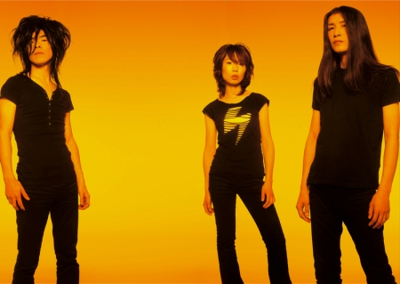

Boris, The Nihilistic Existentialist’s Metal Band
“Face melting” is kind of a strange musical descriptor right? Well, go and read some Internet reviews of Metal genre devouring trio, Boris’, albums or their live shows and you’ll become well acquainted with the term. As a ‘daifan’ of Boris’ who has had the consummate pleasure of catching them live, I can only say, “Oh yeah, totally.”
I would not say that I’m a “metal head” by any stretch, (although Master of Puppets still rules) but I can without a shred of irony or tongue-in-cheek-ness say that seeing Boris live is a damn near spiritual experience. The members of Boris don’t write songs, they compose sound. Occasionally there are song-like patterns that wander into the music but usually they more closely resemble journeys through volume, distortion, and reverberation. You don’t just hear their music you freaking feel it.
Consisting of Atsuo on drums, Wata on guitar, and Takeshi on guitar and bass, Boris began in the early 90s and take their name from a song by sludge-rock gods the Melvins. From early on they’ve had a cultish fan base, but it was really only in the last few years with the release of their critically fawned over 2006 album Pink, that they began to reach a larger audience. It’s strange, but thanks to an American release on the label Southern Lord and the previously mentioned praise from the critical community (including the NY Times!), Boris has actually become much more popular in America and elsewhere in the world than they are here in their homeland of Japan. Last year I witnessed them drop the collective jaws of a sold out show in Seattle, while I’ve only found one Japanese person in all my music discussions who has even heard of Boris.
{kind=link}
So what about Pink specifically garnered the band so much praise you might ask? I’ll tell ya. Before Pink the band had been more associated with the experimental/noise/drone community, releasing such oddities as hour-long single-track drone compositions (which is probably where they got the stoner metal tag). Pink then became one of those somewhat magical albums that managed to make their music more listenable to non-crazies while not alienating their loyal, slightly nuttier fan base. As Boris drummer, Atsuo, himself puts it, “Having some kind of preconceived message or theme is very boring to me. It becomes a crutch. Just say what you want to say.” Part of what makes Boris, and Pink specifically, so great is that this ideal doesn’t ever translate into seeming scattered or lacking in focus. Their music has a very deliberate pacing, and is constructed at all times with the whole in mind. One minute they’re rolling through seven minutes of reverberating sounscapes, and then they’ll suddenly launch into a hard driving charge of churning guitars and spastic drumming, and they make it work nearly every time.
It’s these crazy transitions and the pacing with which they mix the faster moments with the slower, near meditative compositions that makes listening to Pink such a powerful experience. Admittedly, the ‘experience’ part of the equation is very situational, and it doesn’t really work without your complete attention. While a concert is obviously the best setting, others might include sitting on a train at night staring out the window, solo road trips, or that time when you return home late at night feeling ummm… happy and aren’t quite ready to put your head to rest. I promise you, if you are the kind of person that anything I’ve said in this article appeals to, then under these circumstances this album will take you to another place entirely.
I don’t know. It’s weird. Maybe none of this really makes sense without the actual music. All I want is to try to translate the feeling of standing in a crowd, sweating profusely while the ferociousness of Boris’ final song washes over you, feeling your heart begin to race while remaining motionless, feeling like you should be dancing somehow to the upbeat drive of the music, but being physically unable to do anything but gaze, not at your shoes, but up at the stage where three people are working together to construct a cacophony of sound that with each raging beat feels like it is, well, melting your face.
Lastly, I would be totally remiss in my duties if I didn’t mention that Boris actually just released the follow up album to Pink entitled Smile in 2008. It’s good, but I haven’t quite been able to fully digest it yet and thus would have to suggest Pink as the best place to start off. In case any of you are wondering where you can get a hold of any of this music, give me an email at (email address hidden - JavaScript is required) and I will be sure to point you in the right direction.
-Andrew Morris